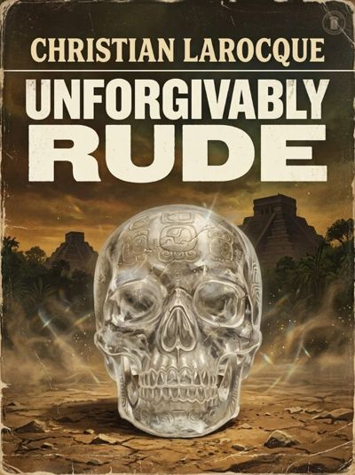
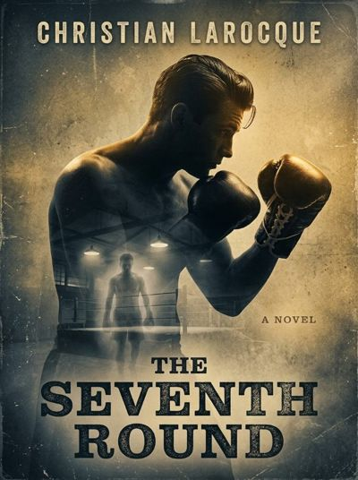
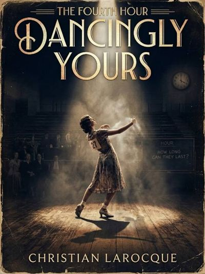
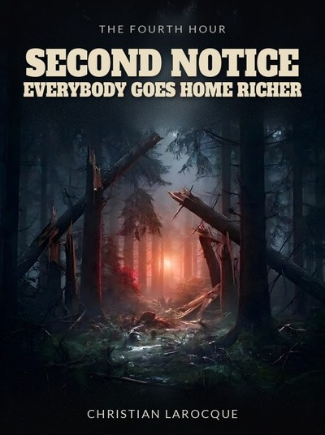
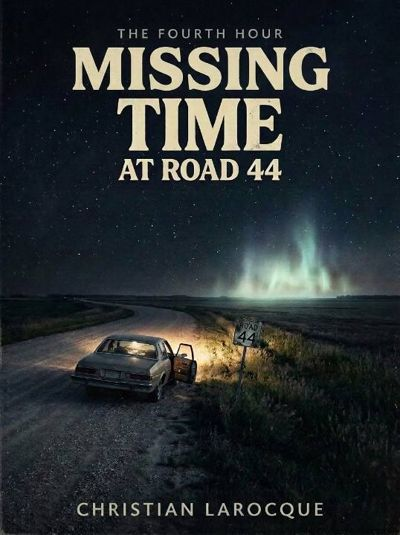
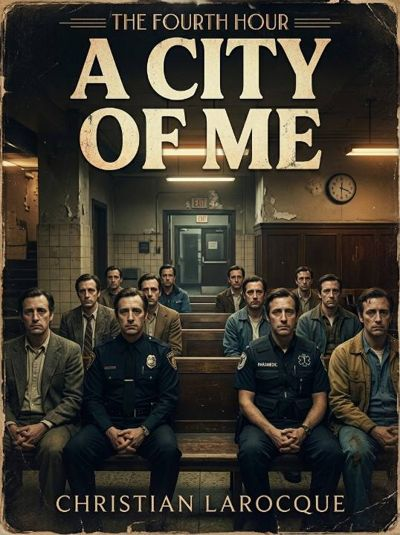

The 4th Hour
« Twenty to four. The hour a watch stops. »
C'est quoi, la 4e heure?
L'heure ouvre à 4 h moins 20 (« twenty to four »). Les quarts de nuit l'appellent la quatrième heure : celle après trois heures, avant la clarté. Chaque histoire décide quand son heure ferme, mais jamais plus tard que la première lueur.
Les histoires partagent aucun personnage pis aucune intrigue. Ce qu'elles partagent, c'est une règle : quelque chose arrive, ou refuse de partir, à la même heure du petit matin. Le surnaturel arrive à l'heure, comme un compte à payer.
📜 Les règles
🗺️ La ligne du temps
The 4th Hour: The Skull
Lubaantun, 1924. Anna a presque dix-sept ans, la montre de poche de son père fait tic-tac sur une caisse à côté de son lit de camp, pis à quatre heures du matin, un mot arrive dans sa tête : « Quillow ». Pas un rêve, pas un chuchotement. Le mot revient, et il la mène jusqu'à un crâne de quartz clair.
L'histoire la suit sur des décennies, jusque dans les tribunaux pis la vieillesse, avec Mr. Fairweather, un homme qui vieillit pas comme du monde, et une partie de cribbage qui dure depuis cinquante ans.
The word arrived at four o’clock in the morning, which Anna would later decide was unforgivably rude.— Chapter One: Quillow
The Seventh Round
Stitch Moriarity remplissait le Stadium le vendredi. Astheure, sa main droite ferme plus comme il faut, pis sa sœur Clara vit dans un poumon d'acier au quatrième étage du Cook County Hospital. Elle parle juste sur l'expiration, quatre ou cinq mots à la fois. Le compte de l'hôpital est en souffrance.
Quand une place s'ouvre sur une carte de combat, Stitch la prend. L'argent est vrai. Le garçon qui l'attend depuis le soir où Stitch l'a envoyé au tapis aussi. Pis quand le courant saute en pleine nuit, la manivelle est dans le placard au bout de la salle.
Four seconds in. Four seconds out. Stitch Moriarity stood at the foot of the iron lung with his hat in his hands and counted it the way other men counted rosary beads.— Chapter 1: The Bellows
Dancingly Yours
Deux cent vingt-neuf heures sur la piste. Jo, qui emballait des pommes à Wenatchee, porte son partenaire Teddy à bout de bras pendant que l'orchestre joue « Shine On, Harvest Moon » pour la quatre centième fois, sous le tableau qui demande HOW LONG CAN THEY LAST?
Pis chaque nuit, à 4 h moins 20, Cal sort du bout noir de la salle, le dossard 40 dans le dos, la main froide, sentant le coffre de cèdre. Le juge Oscar pis sa règle le voient pas. Jo, oui, et elle est prête à tout perdre pour continuer à danser avec lui.
The band was playing "Shine On, Harvest Moon" for about the four hundredth time since Labor Day, and I had Teddy's whole weight on my left arm, and I was counting.— 1. Hour 235
Second Notice
Le camion meurt à minuit et dix, sur un chemin forestier que personne d'autre roule la nuit. Jim parle, Dog écoute. Ils sont à quatre heures du lever du soleil, avec un voyage d'épinette blanche qui vaut rien s'il passe pas la barrière du moulin avant six heures.
Le bois cogne, pis Jim répond par habitude. Une montre accrochée à un arbre est arrêtée à 4 h moins 20. Dans une cabine de camion écrasée, la montre de poche aussi, à côté d'un homme assis les mains sur les cuisses. Pis quelque chose marche debout dans les arbres, au même pas qu'eux.
The truck died at ten past midnight, and Jim took it personally.— The Hello
Missing Time at Road 44
Quatre amis, le Pontiac emprunté du frère de Marcus, un sac de graines de tournesol pis une pluie de météores au coude du chemin 44. Carol tient des listes, Danny bégaie et parle avec ses mains, Marcus a le genou fini, Lise dit tout haut que c'est leur dernier été.
Leurs montres s'arrêtent à 3 h 40 pile. Au lever du soleil, le plafonnier est allumé, le moteur tourne, les vêtements sont à l'envers, il y a de la terre sous les ongles de Carol, pis une marque ronde et rouge derrière son oreille. Et Danny réussit sa première phrase sans accroc.
I had a list. I always had a list. This one was on the inside cover of my chemistry notebook because it was the first paper I found: WATCH METEORS. BE HOME BY 1. DON’T LET DANNY EAT THE LAST OF THE SEEDS.— 1. Road 44
A City of Me
À 3 h 31 un samedi matin, Hal Brenner roule sur Pellham Road en écrivant dans sa tête une lettre à un avocat de brevets. L'invention, c'est un boyau d'arrosage qui s'enroule tout seul. Dans le coffre à gants, un carnet vert compte quarante et un projets, jamais rayés, parce que rayer voulait dire fini ou mort.
À la maison, il y a Dana pis son genou, Ben qui décide de tout vite, pis Sam qui écrit des affaires dans un petit carnet noir. Pis il y a la place, sur le bord de Pellham Road, où l'horloge du tableau de bord colle juste avant 3 h 40.
The dashboard clock said 3:36 and stuck there through two more turns, through the gas station with its price sign dark, through the stretch where the trees came in close on both sides.— Eleven Nights
📌 Dans quel ordre les lire?
Chaque histoire se lit toute seule. Cet ordre-là, c'est ma suggestion à moi : le document de la série fixe pas encore les paires de volumes, alors c'est à toi de décider.
📘 Le document de la série
The 4th Hour: Series Overview : la règle, les volumes, les File Pages pis les décisions ouvertes.